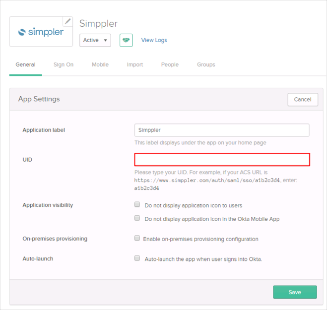
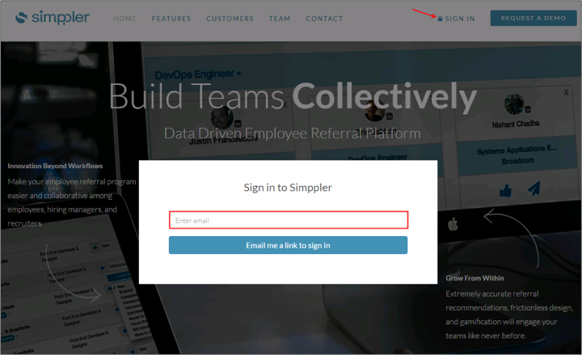

Contact the Simppler Support team at support@simppler.com and request that they enable SAML 2.0 for your account.
Include the following IDP Metadata with your request:
Sign into the Okta Admin dashboard to generate this value.
The Simppler Support team will process your request and will provide you with their URL in the following format:
https://www.simppler.com/auth/saml/sso/[customer-uid]
In Okta, select the General tab for the Simppler app, then click Edit.
Enter the customer-uid provided by Simppler into the UID field.
Click Save.

Done!
Notes:
SP-initiated flows, IDP-initiated flows, and Just In Time (JIT) provisioning are all supported.
Enter your email address.
Click Email me a link to sign in:.
